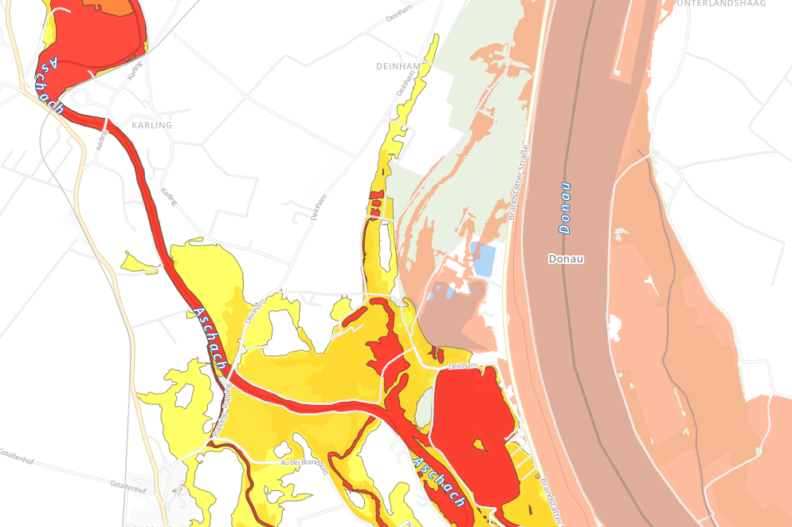

Intro
This is mainly a playground to explore different ways on how to represent areal, open data that we currently can get on floodings in Austria. At the time of developing this prototype (August 2013), very little open flood data is available. Upper Austria is the only one of nine states, that has published shape files as open data so far:
Example screenshot that shows flood risk zones & flooding areas next to Aschbach an der Donau:

About
By using TileMill, the available shape files on flooding are visualized on a map. Several iterations have been created:
Austria Flood 1.0 Minimalistic
Visualizes all rivers in austria + the available flooding data of Upper Austria.
Demo: http://a.tiles.mapbox.com/v3/dasjo.austria_flood/page.html/a>Austria Flood 2.0 OSM Bright
Adds cities, woods, roads and other information based on the OSM Bright preset.
The color scheme of OSM Bright has been lightened to focus on the flood data.
In addition, the visualization of flood data has been tuned. Flood risk zones (Hochwasser Risikozonen) are colored according to their definition in blue (Blaue Zone), yellow (Gelbe Zone), orange (GelbRote Zone) and red (Rote Zone). Flooding areas (Hochwasserüberflutungsflächen) are restricted to those of a prediction for 30 years (HW30) and tooltips are provided for those.
Demo: http://a.tiles.mapbox.com/v3/dasjo.austria_flood2/page.html/a>Setup
The provided source code can be used to replicate the setup for the above examples. Feel free to play around and fork!
- Install TileMill: http://www.mapbox.com/tilemill/
- Add Austria OSM using Postgis
- Follow steps 1 + 2 from http://www.mapbox.com/tilemill/docs/guides/osm-bright-mac-quickstart/
- For step 2 use http://download.geofabrik.de/europe/austria-latest.osm.pbf
- git clone https://github.com/dasjo/austria_flood.git ~/Documents/MapBox/projects/austria_flood
The flood-related shape files are open data published as follows: http://data.gv.at/suche/?search-term=hochwasser&formatTopFilter_shp=on&formatFilter_shp=on&connection=and#showresults
Further reading
- New York 100-Year Flood Zones
- Anke Domscheit-Berg: Flutopfer sollen steuerfinanzierte Hochwasserkarten von Behörden kaufen? Danke, Frau Merkel!
Author
Josef Dabernig (dasjo)